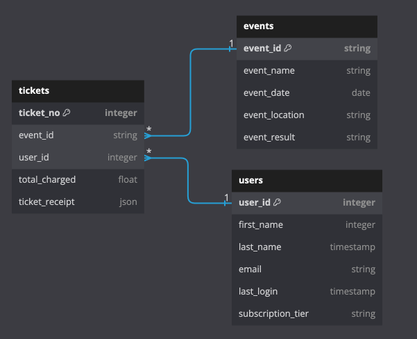

Jesus Caro's Blog
Jesus Caro's Blog
The Virtues of a Programming your ETL Pipeline using a Fluent API
Wed 10 January 2024Introduction: The Fluent Interface Pattern¶
This week marked a new chapter in my career. I started a new job as a Data Engineer for Synaptiq building ETL pipelines that feed into ML and AI models. Looking back at my (nearly) year long career at Sequoia (A First American Startup), I cant help but feel grateful for the opportunity to have worked with such a talented team. I learned a lot about Data Engineering. One of the most undervalues things I learned in that role came in the form of a design preference from my Team lead. Often he would ask me to write additional transforms and apply them in pipelines using the Fluent API. I googled it, and there is some literature on the topic, but it's a bit technical, and not really to the point. So I decided to write this post to explain what it is, and some benefits with leveraging this design by using a simple illustration in the form of a sample Pyspark pipeline.
What is a Fluent Interface?¶
A fluent interface is a design pattern that allows you to chain methods (and in our case transformations) together in a way that is easy to read and understand. Leveraging this design pattern can make your code more readable, easier to maintain, and easier to version control. Those are not the only benefits, using a fluent interface, along with "unit transformations" can make your code more testable.
Let's look at an example. In the following example, I have created a simple data model for a ticket reseller. The data model is simple, and contains three tables:
- Users: The users table contains information about the users of the platform.
- Tickets: The tickets table contains information about the tickets that were purchased by each user.
- Events: The events table contains information about the events that the tickets are for.
An ERD for the data model is shown below:

In this example, we'll be using building our ETL pipeline in pyspark. Pyspark has a neat method called .transform() that allows you to apply a transform to a dataframe. This method returns a new dataframe, and allows you to chain transformations together. First, let's print out our dataframes to see what we're working with.
print("Users dataframe")
users_df.show(3, False)
print("Tickets dataframe")
tickets_df.show(3, False)
print("Events dataframe")
events_df.show(3, False)
Note: that tickets_df contains a nested struct called ticket_receipt that contains information about the ticket purchase, such as tax, fees, surcharge, etc.
tickets_df.printSchema()
Our task is to build an ETL pipeline that will return the number of tickets sold for events between two dates, as well as the total revenue generated for those events, by subscription tier.
Let's start by listing the transformations, so that we can build our ETL pipeline in a fluent way.
- 1.) Filter events between two dates, that were marked
successfuland not cancelled (these were refunded) - 2.) Join events and tickets on event_id to grab ticket charges.
- 3.) Expand the receipt data (this is a nested struct column) to get the ticket charges and types for each ticket, and impute
nullsfor surcharge and hot_ticket_fees. - 4.) Join events and users on user_id to grab the subscription tiers.
- 5.) Group by events, and subscription tier and sum to get the total revenue, and fees + sucharge as (fee_charges) for subscription tiers pivoted.
The Transformations:¶
Knowing what we previously summarize, a great way to build this ETL pipeline using The Fluent Interface is to break the pipeline above into four separate transformations
- 1.)
filter_events() - 2.)
explode_ticket_receipt() - 3.)
agg_revenue() - 4.)
format_and_round()
With all functions named intuitively to reflect the operations performed on the dataframe within each respective function. We'll be using the transform() method to apply each of these functions to the dataframe, and chain them together to get an intuitive, and readable ETL pipeline.
You can read more about the .transform() method using the PySpark Dataframe API here.
Note the function filter_events() is a bit different than the others. This function takes two parameters, start_date and end_date. This is because we want to be able to filter the events dataframe by any date range. The other functions do not take any parameters, and are designed to be used in a fluent way. The parameters are passed into a nested function called _df which is then used to filter the dataframe. This was a common approach that lent itself to building a more 'aesethically pleasing' pipeline. However, you can take another approach and use .transform() to pass in parameters to the functions, without using nested functions.
def filter_events(start_date, end_date, result_event) -> DataFrame:
def _df(df) -> DataFrame:
return (
df.filter(F.col('event_date')
.between(start_date, end_date))
.filter(F.col('event_result') == result_event)
)
return _df
def explode_ticket_receipt(df: DataFrame) -> DataFrame:
return (df.select("*", F.col("ticket_receipt.*"))
.drop("ticket_receipt")
.fillna(0, subset=["surcharge", "hot_ticket_fees"])
)
def agg_revenue(df: DataFrame) -> DataFrame:
return (df.withColumn("fees_charged", F.col("surcharge") + F.col("hot_ticket_fees"))
.groupBy("event_id", "event_name")
.pivot("subscription_tier")
.agg(F.sum("fees_charged").alias("fees_charges"))
)
def format_and_round(df: DataFrame) -> DataFrame:
return (df.withColumn("Prime",F.round("Prime", 2))
.withColumn("Standard",F.round("Standard", 2))
.fillna(0, subset = ["Prime", "Standard"]))
The pipeline:¶
Now that we have broken up each tranformation step, writing the pipeline is easy. All we have to do is chain the functions together using the .transform() method. like so:
agg_report = (
tickets_df
.transform(explode_ticket_receipt)
.join(events_df, on="event_id")
.transform(filter_events("2020-01-01", "2021-01-01", "succesfull"))
.join(users_df, on = "user_id", how = "left")
.transform(agg_revenue)
.transform(format_and_round)
)
agg_report.show(3, False)
If we plan on using this pipeline multiple times, we can create a function that takes the start and end dates as parameters and returns the aggregated report.
def get_revenue_tiers(
tickets_df: DataFrame,
events_df: DataFrame,
users_df: DataFrame,
start_date: str,
end_date: str,
) -> DataFrame:
return (
tickets_df.transform(explode_ticket_receipt)
.join(events_df, on="event_id")
.transform(filter_events("2020-01-01", "2021-01-01", "succesfull"))
.join(users_df, on = "user_id", how = "left")
.transform(agg_revenue)
.transform(format_and_round)
)
report_result_df = get_revenue_tiers(
tickets_df,
events_df,
users_df,
start_date="2022-07-01",
end_date = "2023-01-01",
)
report_result_df.show(3, False)
Testing your transformations¶
One of the benefits of writing your ETL using the fluent interface, is that you can write tests for each of your transformations. This allows you to test each transformation in isolation, and ensure that the output is what you expect. This will help immensely when debugging your ETL pipeline.
In the following example I have created a test for the explode_ticket_receipt() function. This test will ensure that the function returns the correct number of rows, and columns, and that the resulting data after the transformation is what we expect.
For the sake of brevity, I have not written tests for each of our four transformations, but I think this serves as a good illustration of how to handle testing your transformations. In the code below, I am collecting and checking whether the resulting dataframe is what we expect. If it is, it returns true. Of course you wouldn't want to do this in your test suite, you would want to use the assertDataFrameEqual function from the pyspark.testing.utils utils, if you plan to design your test suite using pytest
from pyspark.sql import SparkSession, Row
from pyspark.sql.types import StructType, StructField, IntegerType, FloatType, StringType
def test_explode_ticket_receipt(spark):
test_data = [{'ticket_no': 100001,
'event_id': 'eid_bZzm-20159',
'user_id': 200001,
'ticket_receipt': Row(total_charged=900.00, surcharge=8.99, taxes=9.15, hot_ticket_fees=None)},
{'ticket_no': 100002,
'event_id': 'eid_tEoX-75047',
'user_id': 200002,
'ticket_receipt': Row(total_charged=799.73, surcharge=None, taxes=0.0925, hot_ticket_fees=11.99)},
{'ticket_no': 100003,
'event_id': 'eid_KGDp-61012',
'user_id': 200003,
'ticket_receipt': Row(total_charged=512.87, surcharge=None, taxes=0.05, hot_ticket_fees=None)},
{'ticket_no': 100003,
'event_id': 'eid_KGDp-61012',
'user_id': 200004,
'ticket_receipt': Row(total_charged=512.87, surcharge=160.75, taxes=0.05, hot_ticket_fees=19.95)}]
result_df = [{'event_id': 'eid_bZzm-20159',
'ticket_no': 100001,
'user_id': 200001,
'total_charged': 900.0,
'surcharge': 8.99,
'taxes': 9.15,
'hot_ticket_fees': 0.0},
{'event_id': 'eid_tEoX-75047',
'ticket_no': 100002,
'user_id': 200002,
'total_charged': 799.73,
'surcharge': 0.0,
'taxes': 0.0925,
'hot_ticket_fees': 11.99},
{'event_id': 'eid_KGDp-61012',
'ticket_no': 100003,
'user_id': 200003,
'total_charged': 512.87,
'surcharge': 0.0,
'taxes': 0.05,
'hot_ticket_fees': 0.0},
{'event_id': 'eid_KGDp-61012',
'ticket_no': 100003,
'user_id': 200004,
'total_charged': 512.87,
'surcharge': 160.75,
'taxes': 0.05,
'hot_ticket_fees': 19.95}]
test_df = spark.createDataFrame(test_data)
result_df = spark.createDataFrame(result_df)
test_df = test_df.transform(explode_ticket_receipt)
result_df = result_df.orderBy("ticket_no", "event_id")
test_df = test_df.orderBy("ticket_no", "user_id")
result_df = result_df.select(test_df.columns) # reorder columns to match
return result_df.collect() == test_df.collect() # **don't** do this for large data
#ssertDataFrameEqual(result_df, test_df) # do this for large data
test_explode_ticket_receipt(spark)
Conclusion:¶
In this post, we learned about the Fluent Interface design pattern, and how we can use it to build a readable, and intuitive ETL pipeline. We also learned about some of the benefits of using this design pattern, such as making our code more testable, easier to maintain, debug and version control. We did that by looking at a sample data model, and a simple theoretical use case for an ETL pipeline. We then broke down the pipeline into three separate transformations, and built the pipeline using the .transform() method (along with some joins to add pertinent data). Furthermore, we gave a simple example of how you could make this pipeline more reusable by creating a function that takes the start and end dates as parameters, and returns the aggregated report. Finally, we discussed some of the benefits of using this design pattern, such as making our code more testable, and gave a sample test case for the explode_ticket_receipt() function.